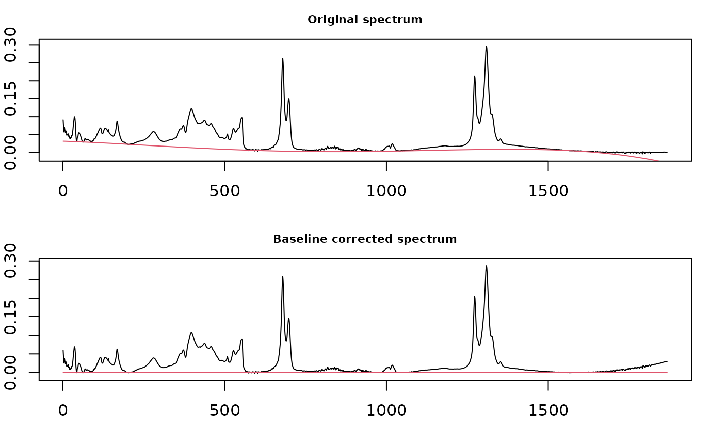

This function mostly wraps functions in package baseline which carries out a variety of baseline correction routines. A simple linear correction method is also available.
baselineSpectra(spectra, int = TRUE, retC = FALSE, show = 1, ...)An object of S3 class Spectra().
Logical; if TRUE, do the correction interactively using
widgets. No results are saved. Use this for inspection and exploration
only. Automatically overriden to FALSE if interactive() returns
FALSE. This is necessary so that plots appear in vignettes etc.
Logical: shall the baseline-corrected spectra be returned in the
Spectra object?
Integer. A (single) sample number for which you wish
to see the results of the baseline correction. By "sample number"
we mean the rows in the spectra$data matrix. To find a specific
sample type spectra$names to see which row contains that sample.
Other arguments passed downstream. The relevant ones can be
found in baseline. Be sure to pay attention to
argument method as you will probably want to use it. You can also
use method = "linear" for a simple linear fit, see Details.
If int = TRUE, an interactive plot is created. If int
= FALSE and retC = FALSE, an object of class baseline is
returned (see baseline-class). If int =
FALSE and retC = TRUE, a Spectra object containing the
corrected spectra is returned. In these latter two cases plots are also
drawn.
In plots using methods from the baseline package, the x axis ticks give the
data point index, not the original values from your data. Note that you
cannot zoom the non-interactive display of corrected spectra because the
underlying function hardwires the display. Try the interactive version
instead (int = TRUE), or use plotSpectra on the
corrected data.
In addition to the methods provided by baseline, you can also use
method = "linear". This correction is handled locally, and is very
simple: a line is drawn from the first data point to the last, and this
becomes the new baseline. This is most suitable for cases in which the
baseline rises or falls steadily, as is often seen in chromatograms.
Additional documentation at https://bryanhanson.github.io/ChemoSpec/
# You need to install package "baseline" for this example
if (requireNamespace("baseline", quietly = TRUE)) {
data(SrE.IR)
temp <- baselineSpectra(SrE.IR, int = FALSE, method = "modpolyfit")
}
